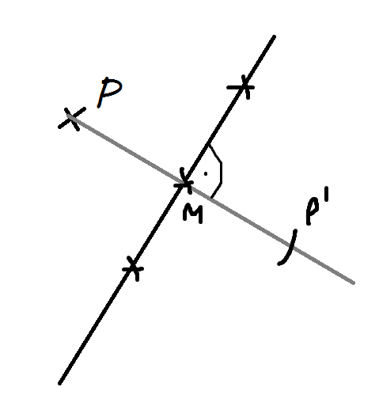

A P pontból merőlesgest állítunk a szimetria tengelyre (t), ahol metszik egymást M pont, felvesszük a merőlegesre a P - M távolságot, az lesz a P'.

A tengelyen lévő pontok, fix pontok.
Definíció:
Egy alakzat tengelyesen szimetrikus, ha megadható hozzá egy olyan egyenes (szimetria tengely), amelyre az alakzat tengelyesen tükrözve egybe esik az eredeti alakzattal.
Szakasztartó:
Bármely szakasz képe is szakasz.
Szögtartó:
Bármely szög képe vele megegyező nagyságú szög.